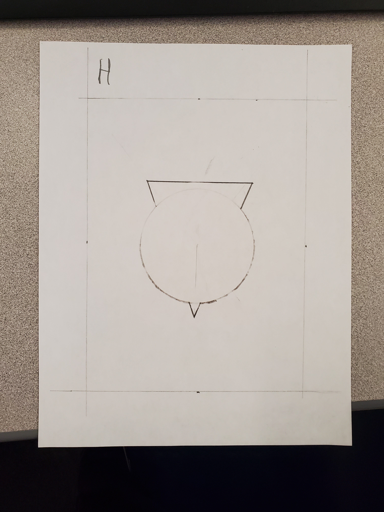
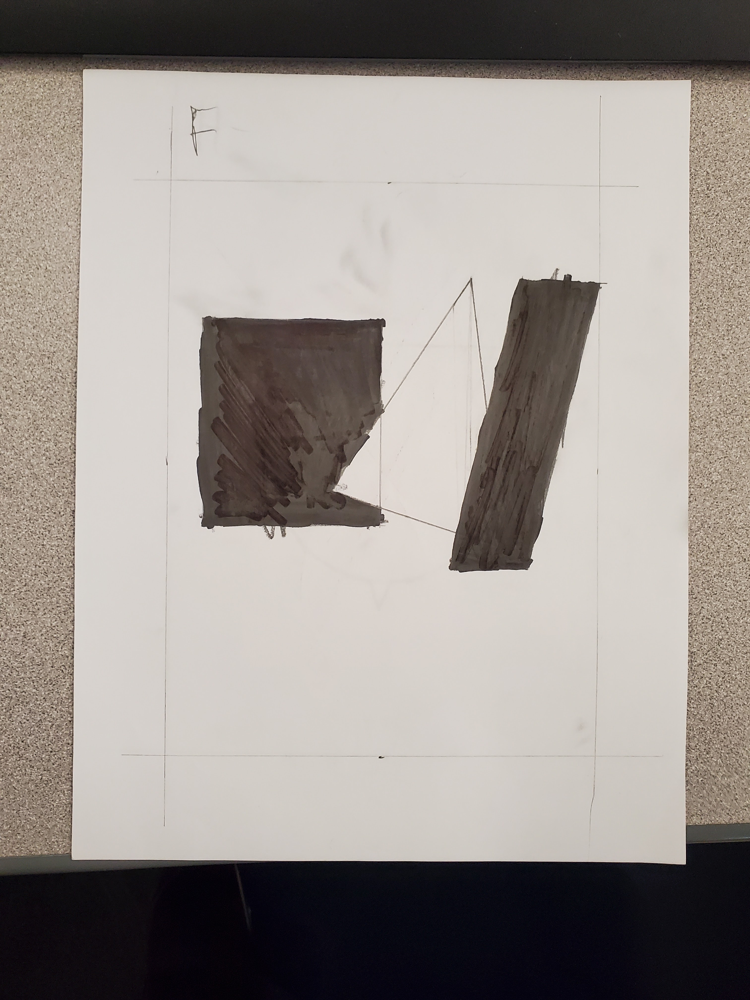
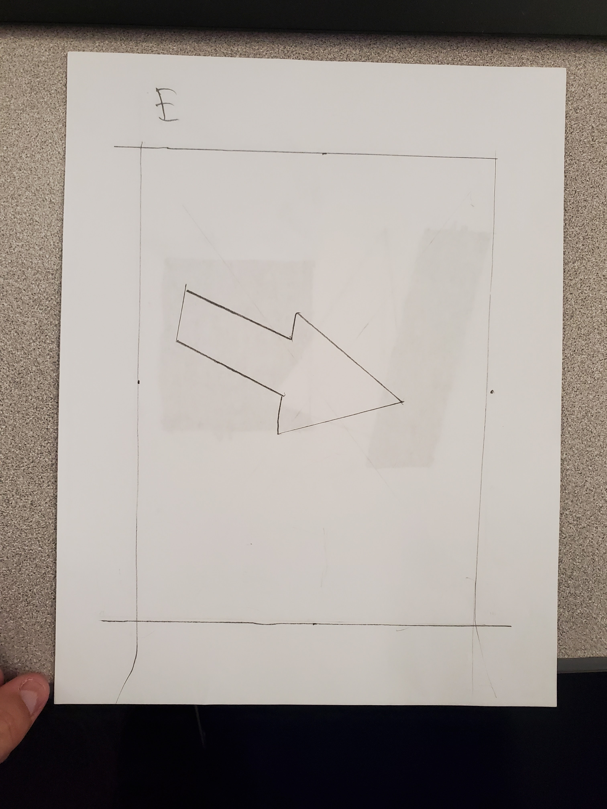
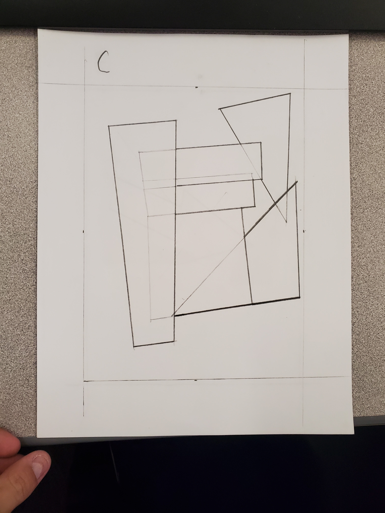
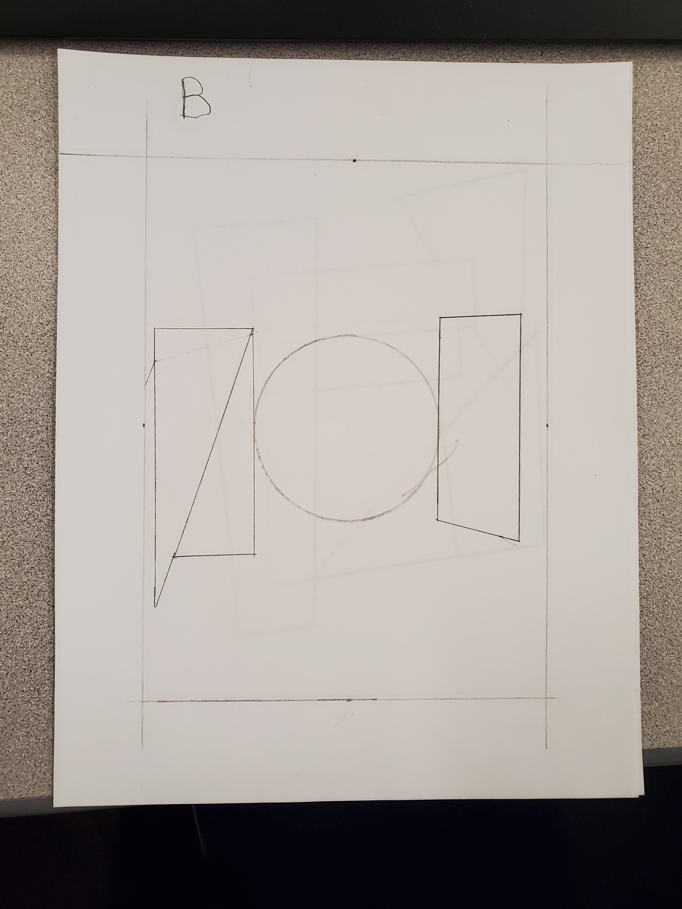
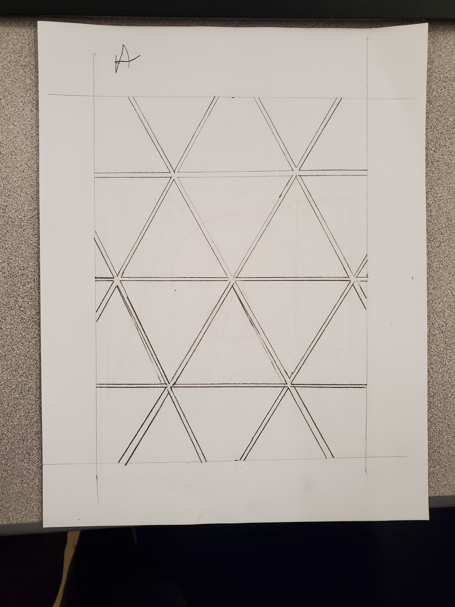

Interelationship of Form
Why did I name this H
This Drawing above is supposed to show "Coinciding" where 2 forms move closer to become one or a fusion.
Why did I name this F
The Drawing here is supposed to show "Subtraction" Where a Invisible form would overlap with a normal visible (Coloured in Black) form, essentially its a Negative Form overlapping with a Positive Form.
Why did I name this E
This drawing here is supposed to show "Union" where 2 forms overlap to become a bigger form.
Why did I name this C
This drawing here is supposed to show "Overlapping" where 2 forms cross over each other, one form appears to be on top of the other forms, I used thin (probably not visible) lines to try to show this.
Why did I name this B
This is supposed to be "Touching" where the edges of 2 forms are touching each other.
Why did I name this A
And this is supposed to be "Detachment" which is essentially the opposite of Touching, NO EDGES are touching. I feel like this is the only artwork I feel like I put effort one. maybe you decide if one of the other artworks are good...